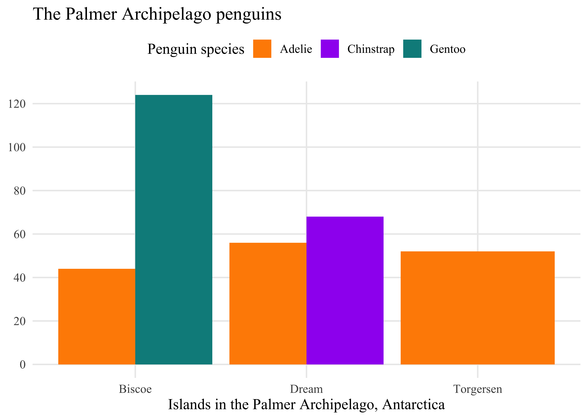

ggplot(data = <DATA>) +
geom_*(
mapping = aes(<MAPPINGS>),
stat = <STAT>,
position = <POSITION>
) +
scale_*(<SCALES>, <GUIDES>) +
labs(<LABELS>) +
coord_*() +
facet_*() +
theme()Visualization with ggplot2
This page contains a quick overview of ggplot2 and the grammar of graphics, as well as resources for learning more about how to use ggplot2.
ggplot2 and the grammar of graphics
ggplot2 is built on a grammar of graphics that abstracts data visualizations into separate components.1
| Component | Function | Description |
|---|---|---|
| Data | ggplot(data) |
The data to be visualized. |
| Aesthetic mappings | aes() |
Aesthetic mappings between variables and visual properties. |
| Geometries | geom_*() |
The geometric shape used to represent the data. |
| Statistics | stat_*() |
Any statistical transformations applied to the data. |
| Position | position_() |
Any positional adjustment: stack, jitter, dodge, etc. |
| Scales | scale_*() |
How aesthetic qualities are mapped to the data. |
| Guides | guides() & labs() |
Labels for axes and legends to help interpret a plot. |
| Coordinate system | coord_*() |
How data coordinates are mapped onto the plane of the graphic. |
| Facets | facet_*() |
Any breaking up of the data into multiple plots. |
| Theme | theme()/theme_*() |
The overall visual defaults of a plot. |
Central to how ggplot2 implements the grammar of graphics is the notion of layers, which is used in two different but overlapping ways.
- As described in the ggplot2 documentation, “A layer combines data, aesthetic mapping, a geom (geometric object), a stat (statistical transformation), and a position adjustment. Typically, you will create layers using a
geom_function, overriding the default position and stat if needed.” - You also build plots in ggplot2 by adding layers, using
+between the different components of the plot to iteratively develop a visualization.
We can translate the grammar of graphics into generalized ggplot2 code as follows:
Note that you do not need to specify all of these elements for your plots. ggplot2 will choose reasonable defaults for those elements you do not specify. Let’s now see what this looks like with an actual plot of the penguins data.
ggplot(data = penguins) +
geom_bar(
mapping = aes(x = island, fill = species),
stat = "count", # default stat for geom_bar(). Calculates y.
position = "dodge" # position bars next to each other
) +
scale_fill_manual(values = c("darkorange", "purple", "cyan4")) + # fill scale
scale_y_continuous(breaks = seq(0, 120, by = 20)) + # More guides for y axis
coord_cartesian() + # default coordinates
labs(title = "The Palmer Archipelago penguins",
x = "Islands in the Palmer Archipelago, Antarctica",
y = NULL, # Remove label for y axis
fill = "Penguin species") +
theme_minimal(base_size = 13, # Change base theme and font
base_family = "Times New Roman") +
theme(panel.grid.minor = element_blank(), # Remove minor grid lines
legend.position = "top", # change position of legend
legend.direction = "horizontal") # and legend direction
ggplot2 reference guides
Here are a couple of quick reference guides for working with ggplot2.
- The documentation for ggplot2 is really good and should be one of the first places you look for help.
- The Introduction to ggplot2 is particularly valuable for going over the grammar of graphics.
- There is also a Data visualization with ggplot2 – Cheat Sheet that provides a nice overview of commonly used aspects of ggplot2. You can view it as either a web page or a PDF.
- The ggplot2 Theme Elements Reference Sheet by Isabella Benabaye is a wonderful for when you want to remember how to change a theme element.
More in depth resources on ggplot2 and visualization
For more in depth discussions for how to use ggplot2 and data visualization in general, start with these resources:
- Hadley Wickham et al., R for Data Science: Import, Tidy, Transform, Visualize, and Model Data, Second edition (O’Reilly, 2023), https://r4ds.hadley.nz.
- Chapter 1. Data visualization: Goes through a similar scatterplot as the Getting started with visualization worksheet but also contains information about other kinds of plots such as bar plots.
- Chapter 9. Layers: Provides a more in depth discussion of the grammar of graphics.
- Chapter 10. Exploratory data analysis: This chapter is less about the mechanics of visualization with ggplot2 and more about why data visualization is important to understanding data.
- Chapter 11. Communication: This chapter focuses on how you can polish plots to make them better communicate the point you want to make with them.
- Kieran Healy, Data Visualization: A Practical Introduction (Princeton University Press, 2018).
- Claus Wilke, Fundamentals of Data Visualization (O’Reilly, 2019).
- Andreas, Krause, Rennie Nicola, and Tarran Brian. “Best Practices for Data Visualisation”. Version v1.0.1. February 1, 2024. https://doi.org/10.5281/ZENODO.10600718.
- The most in depth option is the Second or Third edition of ggplot2: Elegant Graphics for Data Analysis. The second edition from 2016 is available through the Library. The unpublished third edition is available online at https://ggplot2-book.org.
For inspiration
If you want some inspiration for using ggplot2 to make some truly unique visualizations, check out the data visualization work of Nicola Rennie.
- She has recently finished a book that goe through 12 different plots she has made, showing how and why she made them: Nicola Rennie, The Art of Data Visualization with Ggplot2: The TidyTuesday Cookbook (CRC Press, 2025), https://nrennie.rbind.io/art-of-viz/.
- You can also look over the different data challenges she has participated in.
Visualization and historical argument
- John Theibault, “Visualizations and Historical Arguments,” in Writing History in the Digital Age, ed. Jack Dougherty and Kristen Nawrotzki (University of Michigan Press, 2013), https://doi.org/10.3998/dh.12230987.0001.001, 173–185.
- Kieran Healy and James Moody, “Data Visualization in Sociology,” Annual Review of Sociology 40, no. 1 (2014): 105–28, https://doi.org/10.1146/annurev-soc-071312-145551.
- Michael Friendly and Howard Wainer, A History of Data Visualization and Graphic Communication (Harvard University Press, 2021), https://friendly.github.io/HistDataVis/.
Footnotes
Leland Wilkinson, The Grammar of Graphics, Second Edition (Springer-Verlag, 2005), https://doi.org/10.1007/0-387-28695-0; Hadley Wickham, “A Layered Grammar of Graphics,” Journal of Computational and Graphical Statistics 19, no. 1 (2010): 3–28, https://doi.org/10.1198/jcgs.2009.07098; Hadley Wickham, ggplot2: Elegant Graphics for Data Analysis, Second Edition (Springer, 2016), https://doi.org/10.1007/978-3-319-24277-4, page 4.↩︎